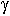
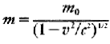
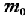

Una (molto, molto, molto) rapida introduzione alla Fisica Atomica
L'atomo è formato da tre tipi particelle: protoni (con carica elettromagnetica
positiva), neutroni (carica nulla e massa quasi pari a quella dei protoni)
ed elettroni (carica negativa e massa pari alla duemillesima parte di quella
dei protoni e dei neutroni). L'atomo più semplice è quello dell'idrogeno,
con un protone ed un elettrone.
Il numero di queste tre particelle varia la struttura e le proprietà
dell'atomo. Il numero di protoni identifica gli elementi chimici e ne determina
la posizione nella tavola periodica (ideata nel 1870 dal chimico russo Dmitrij
Mendeleev). Il numero di neutroni (solitamente nello stesso numero dei protoni,
negli atomi più stabili) identifica gli isotopi (dal greco isos, uguale,
topos, luogo) di un certo elemento, cioè sostanze che hanno le stesse
proprietà chimiche ma diversa massa atomica. In un'atomo stabile e
isolato il numero di protoni e di elettroni è il medesimo. La differenza
tra il numero di elettroni e di protoni determina la carica elettrica di
un atomo. Se in un atomo ci sono più elettroni che protoni, l'atomo
presenta una carica elettrica negativa ed è detto anione (o ione negativo).
Viceversa se ci sono più protoni l'atomo è positivo ed è
chiamato catione (o ione positivo).
Il protone:
I primi esperimenti sulla trasmutazione artificiale dei nuclei degli elementi
furono condotti da Rutherford nel 1919, che scoprì che quando una
particella sufficentemente veloce colpiva un nucleo atomico, veniva
assorbita e veniva emesso un nucleo di idrogeno, con la conseguente alterazione
della struttura chimica del nucleo. Compiendo esperimenti con altri materiali,
Rutherford scoprì che durante gli impatti venivano sempre emessi nuclei
di idrogeno (cioè protoni). I fisici conclusero che il nucleo di idrogeno
fosse un "mattone" fondamentale all'interno dei nuclei e gli assegnarono
il nome di protone (dal greco "protos", primo)
L'elettrone:
Nel periodo tra il 1894 e il 1897 il fisico britannico J.J. Thomson studiò
il fenomeno dei "raggi catodici", come erano chiamati allora. Al giorno d'oggi
sappiamo che questi raggi sono provocati dal passaggio di elettroni in un
tubo in cui è stato fatto un vuoto spinto (questo e' il principio
di funzionamento delle televisioni e dei monitor con tubo catodico, la maggioranza,
al giorno d'oggi). Nel 1879 un altro fisico britannico, Sir William Crookes,
aveva ipotizzato che si trattasse di un flusso di particelle con carica negativa.
Thomson verificò che questi raggi potevano essere deviati da campi
elettrici o da campi magnetici. Con altri esperimenti Thomson confermò
che erano costituiti da particelle, a cui fu dato il nome di "elettroni",
scoperta che gli valse il Nobel per la fisica del 1906.
Il neutrone:
Nel 1930 i fisici Walter Bothe ed Herbert Becker (un suo allievo) scoprirono
che irradiando con raggi (nuclei di elio, e perciò con carica
positiva) alcuni elementi leggeri come il berillio, venivano emesse delle
radiazioni prive di carica. Inizialmente pensarono che si trattasse di radiazioni
 (fotoni, di cui si parlerà in seguito), ma nel 1932 Irène
Curie e il marito Frédeéric Joliot dimostrarono che non si
trattava di raggi . Studiando le collisioni di questa radiazione con
vari tipi di nuclei, James Chadwick stabilì che la massa delle particelle
che componevano questa radiazione era circa pari a quella del protone, scoperta
che gli valse il Nobel nel 1935. A causa della mancanza di carica elettrica
le fu dato il nome di neutrone.
Mentre i fisici sperimentali scoprivano tutte queste particelle "nuove",
i fisici teorici lavoravano incessantemente per creare un substrato teorico
a cui far riferire tutti i dati sperimentali. In alcuni casi i risultati
"superavano" le teorie e dovevano aspettare per avere una teoria che
ne determinasse i risultati. In altri casi succedeva il contrario, ma comunque
era raro che teoria e sperimentazione procedessero di pari passo.
Le teorie che hanno maggiormente rivoluzionato la fisica sono due: la teoria
della relatività e la meccanica quantistica.
La Teoria della Relatività:
La teoria della relatività è composta da due parti, la teoria
della relatività ristretta (o speciale), riguardante solo i sistemi
inerziali (cioè che non subiscono accelerazioni), e la teoria della
relatività generale, riguardante qualunque sistema. La parte che interessa
maggiormente per la fisica delle particelle è la teoria della relatività
ristretta.
La teoria della relatività ristretta venne pubblicata da Albert Einstein
nel 1905, partendo dall'esigenza di risolvere un problema che aveva assillato
i fisici della seconda metà dell'Ottocento. La velocità della
luce risultava sempre pari a circa 299792.5 km/s, anche se il rilevatore
o la sorgente erano in moto. Einstein risolse il problema postulando l'invarianza
della velocità della luce rispetto a qualunque sistema di riferimento.
Partendo da questo presupposto Einstein ottenne conclusioni che, a prima
vista, sembrano in contrasto con il senso comune, come ad esempio il fatto
che la velocità della luce nel vuoto sia un limite massimo non superabile.
Infatti dimostrò anche che la massa di un corpo aumenta coll'aumentare
della velocità, secondo la formula

dove:
-  è la massa a riposo del corpo (cioè ad una velocità
nulla);
- v è la velocità del corpo;
- c è la velocità della luce.
Un'altra conclusione che ottenne fu che l'orologio interno di
una particella rallenta all'aumentare della velocità. Molti esperimenti
hanno confermato questi risultati ottenuti da Einstein, tra cui quello in
cui si accelera una particella instabile e questa decade in un tempo maggiore
rispetto ad una particella identica in quiete.
Un'altra conseguenza dell'aumento della massa con la velocità è
che, fornendo energia cinetica ad un corpo, parte dell'energia va ad aumentarne
la massa. Ma il legame tra massa ed energia è molto più generale,
infatti l'energia si può trasformare in massa (e viceversa) secondo
la celeberrima formula E=mc^2 (E, l'energia, in Joule; m, la massa, in kg;
c, la velocità della luce nel vuoto, in m/s). Questa formula è
molto importante per la fisica perché quando le particelle interagiscono
tra di loro e producono altre particelle, la massa dei prodotti finali non
è necessariamente la massa totale. Per ottenere un valore costante
si deve tener conto sia delle masse, sia delle energie in gioco. Per questo
i fisici misurano la massa delle particelle anche in energia. L'unità
di misura usata più frequentemente è l'elettronvolt (eV), cioè
l'energia acquistata da un elettrone quando è accelerato da una tensione
(differenza di potenziale) di 1 V (1 eV = 1.6*10^-19 J). La massa a riposo
(a velocità nulla) di un elettrone è di 0.51 MeV (1 M = 10^6),
quella di un protone è di 938.2 MeV, quella di un neutrone è
di 939.5 MeV.
La meccanica quantistica:
Come la teoria della relatività, anche la meccanica quantistica fu
ideata per spiegare fenomeni che apparivano come inspiegabili per la fisica
classica. Uno di questi era una domanda sulla natura della luce: Che cos'è
la luce? Negli ultimi tre secoli sono state date molte risposte. Tra le risposte
più gettonate c'erano quelle che definivano la luce come particella
o come onda.
Nel 1803 un fisico inglese, Thomas Young, dimostrò che la luce era
inequivocabilmente un'onda con un esperimento che metteva in risalto un fenomeno
tipico delle onde: l'interferenza. Young fece passare della luce attraverso
una fenditura di un oggetto opaco e guardò la banda luminosa prodotta.
Pensò allora che se avesse aperto un'altra fenditura, sarebbe apparsa
solo un'altra banda. Invece si produssero più bande, in una configurazione
chiamata "frange d'interferenza". Questo accade quando due onde con caratteristiche
simili si incontrano. Se le rispettive sorgenti vibrano "in fase" (cioè
entrambe raggiungono l'ampiezza massima e quella minima nello stesso istante)
in alcuni punti raggiunti dalle onde vi saranno fenomeni di rafforzamento
(interferenza costruttiva), in altri punti le onde si annulleranno reciprocamente
(interferenza distruttiva).
Nella seconda metà del secolo scorso, un fisico scozzese, J.C. Maxwell,
formulò quattro equazioni che rendevano conto di tutti i fenomeni
elettrici e magnetici allora conosciuti e prevedevano l'esistenza delle onde
elettromagnetiche. Nel 1888 Heinrich Hertz diede una dimostrazione sperimentale
della teoria di Maxwell, producendo e rivelando per la prima volta le onde
elettromagnetiche (nel campo delle onde radio). Maxwell dimostrò anche
che la velocità di queste onde era circa quella della luce (altra
conferma della natura di onda della luce) e che tutte le onde elettromagnetiche
(onde radio, microonde, radiazioni infrarosse, luce visibile, luce ultravioletta,
raggi X e raggi ) sono sempre lo stesso tipo di onde, solo con diverse
frequenze e lunghezze d'onda.
Ma anche la natura di particella della luce riceveva conferme...
Uno dei problemi irrisolvibili con la luce come onda era il problema della
radiazione termica, o "di corpo nero". Infatti i fisici, analizzando lo spettro
(cioè misurando l'intensità della radiazione prodotta dal corpo
nelle varie lunghezze d'onda) della radiazione prodotta da un corpo riscaldato
avevano scoperto che variava con la temperatura ma non era influenzato dalla
sostanza che emetteva la radiazione. Tutti i tentativi fatti per spiegare
questo fenomeno fallirono completamente nel quadro della fisica classica.
Nel 1900 Max Planck risolse elegantemente il probema, che era causato dall'ipotesi
che la radiazione venisse emessa in modo continuo. Planck definì come
"quanto" la quantità minima di energia che può essere emessa
o assorbita da un corpo. Perciò un corpo può emettere od assorbire
energia soltanto per multipli interi di un quanto.
Albert Einstein dimostrò che l'ipotesi di Planck spiegava anche altri
fenomeni apparentemente inspiegabili, come l'effetto fotoelettrico. L'effetto
fotoelettrico è quel fenomeno per cui quando la luce colpisce un metallo,
ne provoca un'emissione di elettroni (a condizione che la lunghezza d'onda
della luce sia maggiore di un certo valore). Einstein spinse più avanti
l'ipotesi di Planck, sostenendo che i quanti di energia esistono normalmente
nella luce (e non solo nei fenomeni di assorbimento o di emissione). Definì
questi quanti di luce "fotoni", particelle prive di massa ma con una certa
energia, proporzionale alla lunghezza d'onda.
Lo sviluppo successivo alla teoria quantistica venne dato dalla ricerca sulla
natura dell'atomo. Il problema, infatti, era originato dal modello che c'era
in quel periodo dell'atomo, ideato da Rutherford. In questo modello gli elettroni
orbitavano intorno al nucleo come dei pianeti intorno ad una stella. Il problema
era che, man a mano che compivano delle orbite intorno al nucleo, gli elettroni
avrebbero dovuto perdere energia e poi cadere sul nucleo. Per risolvere questo
problema nel 1913 Niels Bohr propose che l'elettrone non fosse libero di
orbitare dappertutto ma solo su orbite fisse. Il passaggio da un'orbita all'altra
avrebbe comportato l'emissione di un fotone. Questa teoria spiegava benissimo
le proprietà dell'atomo di idrogeno, ma non andava bene con altri
atomi e non riusciva a spiegare altri fenomeni di tipo magnetico.
Nel 1923 Louis de Broglie presentò la tesi di dottoratto all'Accademia
francese delle Scienze intitolata "La connessione tra onde e particelle"
in cui sosteneva che ogni particella materiale ha proprietà corpuscolari
e proprietà ondulatorie. La sua idea non era basata su risultati sperimentali,
e dovette aspettare fino al 1927 per avere una conferma, effettuata da G.P.
Thomson, che vinse il Nobel nel 1937. Ironicamente vinse il Nobel per aver
dimostrato che l'elettrone è un'onda, mentre il padre, J.J. Thomson,
lo vinse per aver dimostrato che l'elettrone era una particella. Però
anche questo modello non risolveva perfettamente i problemi che aveva la
teoria di Bohr. Il problema era che si presupponeva che l'orbita descritta
dall'elettrone fosse circolare. Effettivamente si scoprì che per ottenere
un modello migliore era necessario vedere come si sarebbe comportata un'onda.
Nel giro di pochi anni fu elaborata una teoria, la "meccanica quantistica"
che descriveva perfettamente il moto dell'elettrone, e altri problemi della
struttura della materia.
Fino ad ora abbiamo parlato di esperimenti volti a trovare la posizione di
elettroni e di particelle. Werner Heisenberg era fermamente convinto che
la fisica dovesse interessarsi di grandezze misurabili e si interessò
molto alle misure nel mondo atomico. I suoi ragionamenti lo condussero a
una conclusione molto importante: alcune misure nel mondo atomico formano
coppie, ed è impossibile misurare con precisione i valori di ciascuna
componente della coppia. Heisenberg dimostrò che ci saranno sempre
una certa indeterminazione nella misura della posizione di una particella
ed una certa indeterminazione nella misura della quantità di moto
della particella. Questa legge è nota come "Principio di indeterminazione"
ed è una conseguenza della natura ondulatoria delle paricelle. Per
esempio, se usassimo un microscopio a raggi X per osservare un elettrone,
i fotoni che compongono i raggi X conferirebbero all'elettrone una quantità
tale di energia che lo farebbe uscire dall'atomo.